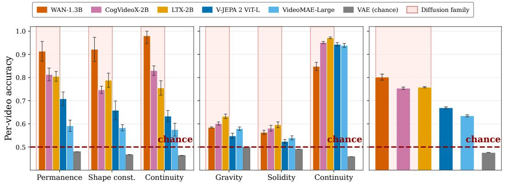

今日主线 · arXiv
Learning Geometric Representations from Videos：GeoVR 用纯 2D video 与 3D foundation teacher 重塑 MLLM 几何表征，是今天最强的视频/空间表征候选
GeoVR 用纯 2D video 与 3D foundation teacher 重塑 MLLM 几何表征，是今天最强的视频/空间表征候选。

GeoVR 用纯 2D video 与 3D foundation teacher 重塑 MLLM 几何表征，是今天最强的视频/空间表征候选。
P0
高相关；详见方法、贡献和实验边界。
方法：GeoVR 用纯 2D video 与 3D foundation teacher 重塑 MLLM 几何表征，是今天最强的视频/空间表征候选
 P0
P0
高相关；详见方法、贡献和实验边界。
方法：SelfBootTok 把视觉 token 分成 global/local 组，并用 self-bootstrapping 让 tokenizer 承担局部细节学习
 P0
P0
高相关；详见方法、贡献和实验边界。
方法：Future-L1 让视频 MLLM 在生成中交替使用语言 token 与连续视觉 latent span，针对视觉语义被文本化损失的问题

P1高相关；详见方法、贡献和实验边界。
方法：通过反演视频扩散轨迹发现物理可行性可从 DiT 状态线性解码，提示生成式预训练隐含视觉物理表征
 P1
P1
中高相关；详见方法、贡献和实验边界。
方法：从人类第一视角视频恢复相机/手腕轨迹，把主动感知当作预训练信号；虽偏机器人，但对视频 SSL 有迁移价值